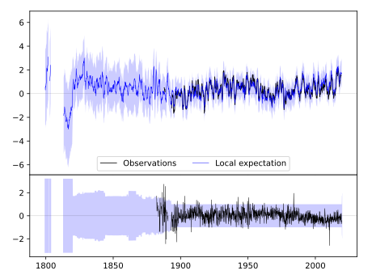
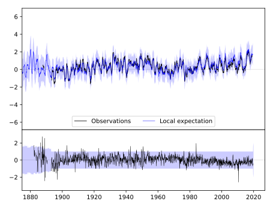
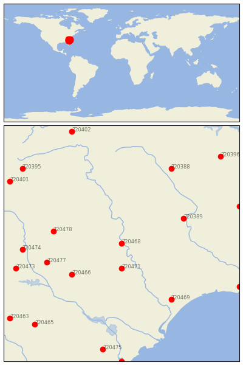

CHERAW [USA]


| Neighbour | Name | Country | Distance | Lon/Lat | Years |
|---|
| 720468 | CHERAW | USA | 0 | -79.9, 34.7 | 1882-2019 |
| 720471 | DARLINGTON | USA | 44 | -79.9, 34.3 | 1893-2019 |
| 720466 | CAMDEN 3 W | USA | 92 | -80.7, 34.2 | 1893-2019 |
| 720389 | FAYETTEVILLE PWC | USA | 101 | -78.9, 35.1 | 1871-2019 |
| 720478 | WINTHROP UNIV | USA | 102 | -81.0, 34.9 | 1893-2019 |
| 720477 | WINNSBORO | USA | 114 | -81.1, 34.4 | 1887-2019 |
| 720469 | CONWAY | USA | 124 | -79.1, 33.8 | 1888-2019 |
| 720474 | SANTUCK | USA | 146 | -81.5, 34.6 | 1891-2019 |
| 720388 | CHAPEL HILL 2 W | USA | 151 | -79.1, 35.9 | 1820-2019 |
| 720473 | NEWBERRY | USA | 162 | -81.6, 34.3 | 1887-2019 |
| 720391 | GOLDSBORO 4 SE | USA | 185 | -78.0, 35.3 | 1856-2019 |
| 720403 | SOUTHPORT 5 N | USA | 191 | -78.0, 34.0 | 1822-2019 |
| 720475 | SUMMERVILLE 4W | USA | 191 | -80.2, 33.0 | 1893-2019 |
| 720465 | BLACKVILLE 3 W | USA | 193 | -81.3, 33.4 | 1884-2019 |
| 720395 | LENOIR | USA | 197 | -81.5, 35.9 | 1871-2019 |
| 720401 | MORGANTON | USA | 197 | -81.7, 35.7 | 1879-2019 |
| 720467 | CHARLESTON CITY | USA | 211 | -79.9, 32.8 | 1823-2019 |
| 720396 | LOUISBURG | USA | 212 | -78.3, 36.1 | 1891-2019 |
| 720463 | AIKEN 5SE | USA | 212 | -81.7, 33.5 | 1893-2019 |
| 720402 | MT AIRY 2 W | USA | 212 | -80.7, 36.5 | 1889-2019 |